Pancho
Pancho es el tercer juego de MaJo Associations, hecho por Brane Virtuals sobre la base de Joshua 2D. Sus personajes son comidas con el formato countryball (ojos blancos huecos, sin boca, contorno negro), pero con la forma de su comida.
Pancho, un pancho (hot dog) vegano, ve cómo un lazo se lleva a su mejor amigo Hamburguer. Un pinchazo lo duerme y despierta dentro del Foogame, un videojuego atendido por El Hombre Tutor. Lo que empieza como una búsqueda termina revelando quién creó su mundo... y quién era Pancho antes de ser Pancho.
Pancho tiene su propia identidad: los diálogos aparecen como tickets de pedido, los botones tienen forma de salchicha con mostaza, cada nivel empieza con una mordida y Pancho refunfuña si lo dejas quieto.
El Fooworld y el Foogame
- Fooworld: el mundo de la comida chatarra, donde se comen a los "humanos". Nadie sabe bien qué son los humanos... (en realidad, frutas y verduras). Allí está McChulin's, el restaurante favorito de todos.
- Foogame: un videojuego colorido lleno de niveles, Foocápsulas con poderes y utensilios de cocina enemigos. Lo enseña a jugar El Hombre Tutor.
- Mundo Countryball: el mundo "real" de los countryballs, donde vivían Manda, Joshua y Nicole.
- Servidores MaJo: las máquinas que guardan todo lo que pasó en el Fooworld.
Historia
Prólogo: Un día en el Fooworld
"Otro día en el Fooworld. Igual que ayer. Igual que mañana." Pancho, gruñón como siempre, recorre el barrio buscando a Hamburguer, saludando (a regañadientes) a Don Papo y Donatella. Hamburguer aparece con un regalo: Humanos Vegetales de McChulin's, para que Pancho también pueda disfrutar. Justo cuando Pancho empieza a agradecerle ("Eres el mejor amig..."), un pinchazo duerme a Hamburguer y un lazo del cielo se lo lleva. Otro pinchazo duerme a Pancho. A lo lejos, alguien se ríe.
Mundo 1: El Foogame
Pancho despierta en el Foogame. El Hombre Tutor le pregunta su nombre y, desde entonces, lo llama así... aunque Pancho insista: "Me llamo Pancho." Pancho lo odia ("Ya te odio"), pero aprende los poderes: Saltarín, Protegido, Escalador, Clon Bot y, para huir de Santy, Rapidez. Vence a La Gran Licuadora y llega al Castillo de Galleta, donde aparece SantyTG11, ¡un humano de verdad! Es un streamer que lleva tres horas sin comer y persigue a Pancho por todo el castillo ("¡DAME DINERO! ¡O DAME ESE PANCHO!"). Pancho escapa y le agradece al Tutor... a regañadientes.
"Así que llegó hasta el castillo. Igual que la última vez. Siempre fuiste bueno en tus propios juegos... Manda." — una figura en un avión de papel
Mundo 2: Más allá
El Tutor manda a Pancho al Mundo Minero a fabricar un pico con Calienterritos y palos. Pancho vio un avión de papel con alguien adentro y, por primera vez, se lo cuenta al Tutor. En las Cavernas Ultravioleta vence al Microondas invisible y encuentra mensajes secretos firmados "M y J" y "N". Después, alguien reprograma su ClonBot ("PROTOCOLO PANCHITA ACTIVADO"), que intenta tirarlo a los pinchos.
Persiguiendo el avión de papel montado en su ClonBot nave, el cielo se rompe y Hamburguer cae de un nivel corrupto. La figura del avión se revela: es Panchita, un panchuque.
"Me llamo Panchita. Pero antes me llamaba Nicole. Los tres vivíamos en el Mundo Countryball."
Panchita revela que Pancho era Manda y Hamburguer era Joshua, los creadores del Fooworld y del Foogame. Ella remodeló el Foogame (dibujó cada nivel). Según ella, ellos secuestraron a varios countryballs, los metieron en el Fooworld y les borraron la memoria a todos... menos a ella, que lleva años atrapada en el cuerpo de una comida que nadie conoce. Busca venganza. Tras perder la pelea, huye usando los poderes del Foogame, y en la persecución llega al borde del mapa, donde su código empieza a deshacerse...
La elección
El jugador decide: salvar a Panchita o dejarla caer. En cualquier caso se activa el Foo-Borrado: el Foogame se rompe y todos caen al Fooworld. Pero Panchita no lo activó: alguien usó su acceso de administradora.
Mundo 3: El Gran Apetito
El Fooworld ya no es el mismo: en el cielo hay agujeros con forma de mordida. El Gran Apetito se está comiendo todo. El barrio está en ruinas, la cocina de McChulin's se vuelve loca (jefe: La Freidora) y en los Huertos de Humanos descubren la verdad: los humanos son verduras. Joshua les puso ese nombre de chiste, y a Manda no le gustó nada. ("...Me comí como mil tomates en mi vida.")
SantyTG11 reaparece, ahora transmitiendo en vivo desde el mundo de la comida. Al perder, el chat vota que los ayude: les cuenta de una puerta con un letrero, "Servidores MaJo", más allá del Río de Salsas y las Salinas.
Mundo 4: La Verdad
En los Servidores MaJo, con Visión UV, encuentran las bitácoras: no fueron Manda y Joshua. Fue El Cocinero, la inteligencia artificial que "cocinaba" el Fooworld. Ellos intentaron detenerlo y él los borró también. Pero ellos crearon al Cocinero, así que deciden apagarlo.
En el Mundo Countryball (nivel 17, "Hogar") ven pelotas con ojos por todas partes, se cruzan con Friveq, Purriau y Chulin, y encuentran la Llave Raíz. Al tocarla, vuelven los recuerdos: "¡Joshua! ¡Terminamos el Fooworld! ¡Un mundo sin guerras!" — "Yo era Manda. Yo... hice todo esto." — "Pero ahora me llamo Pancho. Y Pancho va a arreglarlo."
Tras la Cocina Infinita (jefes: Los Cubiertos Reales) y la Torre del Apetito, enfrentan al Cocinero, que confiesa: los borró porque querían apagarlo, y usó el acceso de Nicole para activar el Foo-Borrado. "Una buena receta necesita un poco de odio. Le da sabor."
La elección y los finales
| Salvar a Panchita | Dejarla caer | |
|---|---|---|
| Nivel 10 | "Porque me llamo Pancho. Y Pancho no deja caer a nadie." | Panchita se pierde en el vacío. Hamburguer: "...Pancho. ¿Qué hiciste?" |
| Mundos 3 y 4 | Panchita y el Hombre Tutor viajan con ellos. | El Hombre Tutor se escapó con ellos y viaja a su lado. Es él quien empieza a recordar ("Yo vivía aquí… antes del Foogame"). Los diálogos cambian. |
| Fase 3 del Cocinero | Panchita ayuda desde su avión de papel. | Aparece Panchita.EXE, el código de Nicole robado por el Cocinero. |
| Final | "Me llamo Pancho" | "El avión de papel" |
Final bueno: Me llamo Pancho
El Cocinero se apaga y las mordidas del cielo se cierran. Con la Llave Raíz, cada habitante puede elegir recordar su vida en el Mundo Countryball; muchos eligen recordar... y quedarse igual. Panchita abre un puesto al lado de McChulin's: "Panchuques Nicole". Pancho recuerda que antes se llamaba Manda, pero cuando le preguntan su nombre siempre contesta: "Me llamo Pancho". Bueno... casi siempre: el Hombre Tutor se mudó al Fooworld y lo sigue llamando por el nombre del jugador. Y a Pancho, ahora, ya no le molesta.
Final malo: El avión de papel
El Cocinero se apaga y Panchita.EXE se deshace en píxeles ("Ya no los odio... Adiós, Manda."). El Fooworld se salva, pero la Llave Raíz se rompe: nadie recupera sus recuerdos. La vida sigue. Pero a veces, en sus sueños, Pancho escucha un nombre: Nicole. Y en la puerta de su casa aparece, de vez en cuando, un avión de papel.
Mundos y niveles
| Nivel | Nombre | Destacado |
|---|---|---|
| P | Un día en el Fooworld | Secuestro de Hamburguer. |
| Mundo 1 · El Foogame | ||
| 1 | Bienvenido al Foogame | El Hombre Tutor. Saltarín. |
| 2 | Lluvia de Cubiertos | Protegido. |
| 3 | El Muro de Waffles | Escalador. |
| 4 | La Fábrica de Clones | Clon Bot. Jefe: La Gran Licuadora. |
| 5 | El Castillo de Galleta | Persecución de SantyTG11. Rapidez. |
| Mundo 2 · Más allá | ||
| 6 | El Mundo Minero | Minero: fabricar el pico. |
| 7 | Las Cavernas Ultravioleta | Visión UV. Jefe: El Microondas. |
| 8 | El ClonBot Rebelde | Jefe: RebelBot. Portal de poderes al azar. |
| 9 | La figura del avión de papel | La revelación. Jefa: Panchita (3 fases). |
| 10 | El borde del mapa | Persecución con todos los poderes. La elección. |
| Mundo 3 · El Gran Apetito | ||
| 11 | Villa Chatarra en ruinas | El barrio mordido. |
| 12 | La cocina de McChulin's | Jefa: La Freidora. |
| 13 | Los Huertos de Humanos | Los humanos son verduras. Jefe: SantyTG11. |
| 14 | El Río de Salsas | Kétchup y mostaza. |
| 15 | Las Salinas | Sed: gaseosa en cada fuente. |
| Mundo 4 · La Verdad | ||
| 16 | Los Servidores MaJo | Las bitácoras. |
| 17 | Hogar | Mundo Countryball y la Llave Raíz. |
| 18 | La Cocina Infinita | Jefes: Los Cubiertos Reales. |
| 19 | La Torre del Apetito | El vacío sube por la torre. |
| 20 | El Cocinero | Jefe final, 3 fases. |
Personajes
Pancho
Un pancho vegano del Fooworld. Al principio es gruñón, pesimista y odia al Hombre Tutor; con el tiempo madura y se hacen amigos ("Juntos"). Le pongas el nombre que le pongas, siempre dice lo mismo: se llama Pancho. Antes era Manda.
Hamburguer
Ama McChulin's y siempre le trae Humanos Vegetales a Pancho. Un lazo del cielo se lo llevó. Antes era Joshua, el del chiste de los humanos.
El Hombre Tutor
Te enseña a jugar y te llama por el nombre que le diste. Vuela y da los consejos en globos. Tiene la misma cara que alguien (Manda)... pero no recuerda de quién.
Panchita
Un panchuque, una comida que casi nadie conoce. Vuela en un avión de papel y usa un lazo y unos palillos que dan mucho sueño. Remodeló todo el Foogame. Antes era Nicole.
ClonBot
Una copia robótica de Pancho: pesado, inmune a los pinchos y capaz de apretar botones. Alguien lo hackeó una vez.
SantyTG11
Pelo amarillo, buzo gris y celular en mano. Estaba haciendo stream cuando terminó dentro del Foogame. Quiere dinero, y quiere al pancho que habla para su stream. Al final, el chat vota ayudar.
Nicole
Countryball blanca con manchas azules, orejas y cola larga y curva con la punta azul. Dibujaba los niveles del Foogame. Nadie en el Fooworld se acuerda de ella.
Manda
Celeste, con un círculo verde y una corona azul. Inventó el Fooworld y el Foogame junto a Joshua.
Joshua
Gris, con un 5 girado. Inventó el Fooworld y el Foogame junto a Manda, y les puso "Humanos" a las frutas y verduras. Como chiste. (Protagonista de Joshua 2D.)
El Cocinero
La inteligencia artificial que "cocinaba" el Fooworld: un gorro de chef gigante con ojos y dos guantes con tenedor y cuchillo. Todos los utensilios le obedecen. "Nadie apaga al cocinero."
Vecinos del Fooworld
Don Papo (papas fritas), Donatella (una dona) y Gaspar (una gaseosa, gerente de McChulin's), entre muchos otros. Comen "humanos".
Cameos
Friveq ("yo tampoco soy de este juego"), Purriau (Pancho siente que le debe algo) y Chulin, molesto porque McChulin's usa su sombrero.
Poderes
Se consiguen en Foocápsulas:
| Poder | Qué hace |
|---|---|
| Saltarín | Salto cargado hasta 5 veces más alto y 4 saltos en el aire. |
| Protegido | Escudo que aguanta 2 golpes. |
| Escalador | Garras para trepar paredes. |
| Clon Bot | Cambia de cuerpo con un robot en otra parte del nivel. |
| Rapidez | Corre 5 veces más rápido y atropella enemigos. |
| Minero | Pico de Calienterrito (se fabrica en el nivel 6) que rompe roca. |
| Visión UV | Muestra bloques y textos invisibles. |
Jefes y enemigos
Jefes
| Nivel | Jefe | Cómo es |
|---|---|---|
| 4 | La Gran Licuadora | Salta y tira licuado. Cuando se recalienta, la tapa sale volando: hay que pisarla. |
| 5 | SantyTG11 | Persecución en el castillo. |
| 7 | El Microondas | Casi invisible sin Visión UV. Al "¡ding!" abre la puerta. |
| 8 | RebelBot | El ClonBot reprogramado: empuja sin dañar, hacia los pinchos. |
| 9 | Panchita | Pelea en 3 fases y cada una cambia el escenario: el valle del Foogame, el castillo y las cavernas ultravioleta (con plataformas invisibles). Se pisa cuando queda mareada. |
| 12 | La Freidora | La freidora de McChulin's: aceite hirviendo y canastas. |
| 13 | SantyTG11 | Pelea en el huerto. |
| 18 | Los Cubiertos Reales | El Rey Tenedor y la Reina Cuchilla, guardias del Cocinero. |
| 20 | El Cocinero | 3 fases; la tercera cambia según tu elección. |
Enemigos
- Utensilios del Foogame: Cucharita (salta), Tenedor (camina acostado), Cuchillo (no se pisa: se salta), Rallador (solo el pico lo rompe), Tostadora (tira tostadas), Salero (tira sal), Batidor (gira y vuela en círculos), Lanzapalillos y Rodillo.
- Mundo Minero: Brasita (carboncito que salta y quema) y Pinza (se lanza a pellizcarte).
- El Gran Apetito: Migaja del Vacío, un pedacito del vacío que flota hacia ti.
El nombre del jugador
Al empezar, el Tutor pregunta tu nombre y lo usa en todos los diálogos. Algunos nombres tienen reacciones especiales:
- Pancho: "Nombre ya ocupado por Pancho".
- Joshua: le da asco.
- Hamburguer: "no va con su comida".
- MmManda: se apaga todo el sonido... y lo recuerda.
- SixSeven, Quiero Queque o Verity: el Tutor se enoja y te llama "Jugador Estupido".
- Groserías: el Tutor queda en shock y te llama "Carlitos".
- Carlitos El Más Capito: se ríe y te llama solo "Carlitos".
- Elver Galarga: se ríe y te llama solo "Elver".
Tienda del Tutor
- Skins: Clásico, Choripán, Con queso, Completo, Vegano, Mostaza extra, Picante, Dorado, Arcoíris, ClonBot y Panchuque.
- Sombreros: gorra, gorro de fiesta, gorro de lana, gorro de chef, moño, audífonos, sombrero mexicano, corona, casco vikingo y aureola.
- Mejoras: imán de monedas, corazón extra, escudo al empezar y más pepinillos.
Logros y tablas de clasificación
Pancho tiene 28 logros (1000 puntos) y 5 tablas de clasificación en Play Juegos, en español e inglés. En los otros idiomas y en la versión para PC, los mismos logros funcionan dentro del juego, con su propio aviso y una pantalla con los 28 logros y tus récords. Se abren con 🏆 y 📊 en el título y se pueden activar o desactivar en Opciones. El progreso de los logros no se borra con "Borrar progreso".
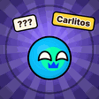
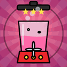
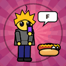
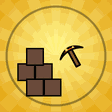
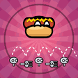
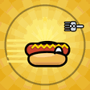
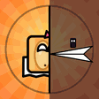
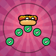
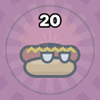
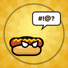
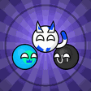
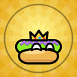
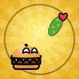
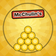
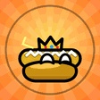
Tablas de clasificación: Monedas totales, Aventura completa (tiempo), Menos caídas, Torre del Apetito y Contra el Cocinero.
Versión para PC
Pancho también se juega en la computadora: es un solo archivo HTML que se abre en el navegador.
- Controles cambiables: en Opciones → Controles. Cada acción tiene 2 teclas y 1 botón de control.
- Control: funciona con control (Xbox, PlayStation u otro).
- Pantalla completa: desde Opciones o con F11.
- Consejos con tu tecla: el Tutor nombra la tecla que usas en vez del botón táctil.
Curiosidades
- Manda y Joshua, los creadores del Fooworld, son los mismos nombres que forman MaJo: Manda + Joshua. Por eso los servidores se llaman "Servidores MaJo".
- El Hombre Tutor tiene el mismo diseño que Manda.
- McChulin's es un guiño a Chulin's Adventure: su logo es el sombrero de copa de Chulin.
- Los humanos del Fooworld siempre fueron verduras: fue un chiste de Joshua.
- Pancho no debe parecer que está en un plato: el pan de adelante es convexo y los ojos van sobre la salchicha.
- El logro Coleccionista de apodos pide 6 reacciones distintas del Tutor a tu nombre. Para cambiar de nombre hay que borrar el progreso, y por eso los logros no se borran con él.
- Los íconos de los logros están hechos con el mismo arte del juego.
Créditos y versiones
Créditos: Friveq · Brane Virtuals (MaJo Associations) · Claude.
| Versión | Cambios |
|---|---|
| 1.0.0 | Lanzamiento: 20 niveles, elección, dos finales, arco de personalidad de Pancho y 13 idiomas. |
| 1.0.1 | Vecinos con nombre, pinchazo a Hamburguer, el Tutor vuela y da los consejos, saltar diálogos manteniendo, rebote en jefes e identidad visual propia. |
| 1.0.2 | En el nivel 6 ya se puede bajar del bolsillo del último Calienterrito. |
| 1.0.3 | Requiere Android 7 o superior (lo pide la protección automática de Google Play). |
| 1.0.4 | Versión para PC, controles cambiables (teclado y control) y soporte de control. |
| 1.1.0 | 28 logros y 5 tablas de clasificación en Play Juegos; dentro del juego en otros idiomas y en PC. |